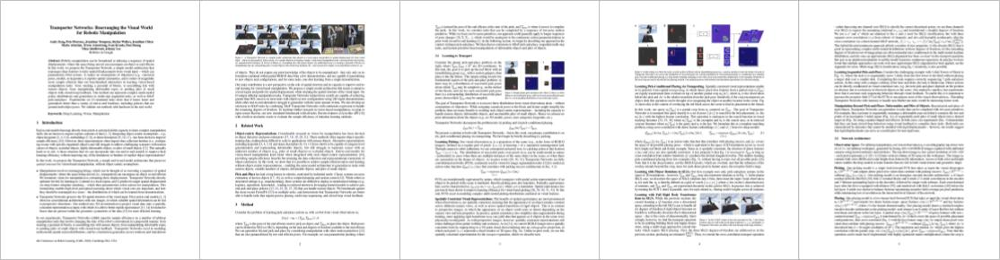

Conference on Robot Learning (CoRL) 2020
Abstract. Robotic manipulation can be formulated as inducing a sequence of spatial displacements: where the space being moved can encompass object(s) or an end effector. In this work, we propose the Transporter Network, a simple model architecture that rearranges deep features to infer spatial displacements from visual input -- which can parameterize robot actions. It makes no assumptions of objectness (e.g. canonical poses, models, or keypoints), it exploits spatial symmetries, and is orders of magnitude more sample efficient than our benchmarked alternatives in learning vision-based manipulation tasks: from stacking a pyramid of blocks, to assembling kits with unseen objects; from manipulating deformable ropes, to pushing piles of small objects with closed-loop feedback. Our method can represent complex multi-modal policy distributions and generalizes to multi-step sequential tasks, as well as 6DoF pick-and-place. Experiments on 10 simulated tasks show that it learns faster and generalizes better than a variety of end-to-end baselines, including policies that use ground-truth object poses. We validate our methods with hardware in the real world.
Pushing piles with closed-loop feedback
Production pick-and-place w/o 3D models
Multi-step sequential tasks
Pick-and-place with unseen objects
Learning to push piles on real robots
Pick-conditioned placing from 10 examples
Paper
Latest version (Oct 28, 2020): arXiv:2010.14406 [cs.RO].
Published at the Conference on Robot Learning (CoRL) 2020
★ Plenary Talk, Best Paper Presentation Award Finalist, CoRL ★

Code
Code is available on Github. Includes:
• Simulation environments (Ravens with PyBullet).
• Training/testing code (with TensorFlow/Python).
• Pre-trained models and datasets.
Simple toy examples with JAX and Flax in Colab.
Bibtex
title={Transporter Networks: Rearranging the Visual World for Robotic Manipulation},
author={Zeng, Andy and Florence, Pete and Tompson, Jonathan and Welker, Stefan and Chien, Jonathan and Attarian, Maria and Armstrong, Travis and Krasin, Ivan and Duong, Dan and Sindhwani, Vikas and Lee, Johnny},
journal={Conference on Robot Learning (CoRL)},
year={2020}
}
Team


Robotics at Google
Highlights


Supplemental Video
Method
Acknowledgements
Special thanks to Ken Goldberg, Razvan Surdulescu, Daniel Seita, Ayzaan Wahid, Vincent Vanhoucke, Anelia Angelova, Kendra Byrne, for helpful feedback on writing; Sean Snyder, Jonathan Vela, Larry Bisares, Michael Villanueva, Brandon Hurd for operations and hardware support; Robert Baruch for software infrastructure, Jared Braun for UI contributions; Erwin Coumans for PyBullet advice; Laura Graesser for video narration.